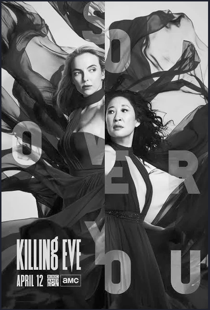

Killing Eve is actually an adaptation of Luke Jennings' Code Name Villanelle novels, but the success of the series doesn't lie in the novels. It is the merit of Phoebe Waller-Bridge to take a novel in which two women operate in a masculine and harsh world, a novel which is so blended with the traditions of the spy genre, and turn it into Killing Eve."
Bon A Petit Dedective
Sherlock Holmes

Merely examining what he eats or drinks would not be enough to define, understand or get to know the famous Sherlock Holmes. However, the gastronomical preferences of the great detective could very well provide us with valuable details about his daily routine, habits and tastes.